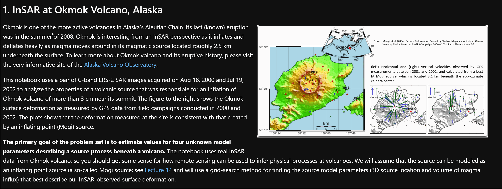
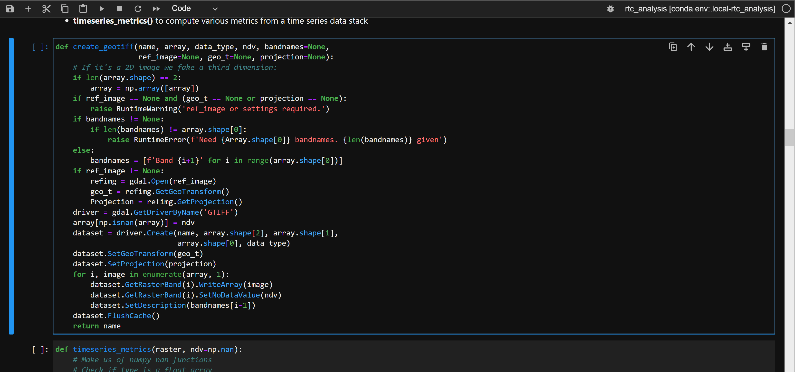
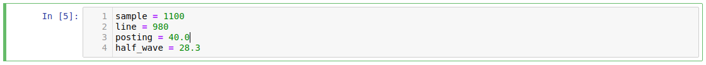
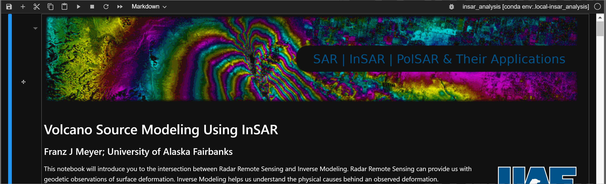
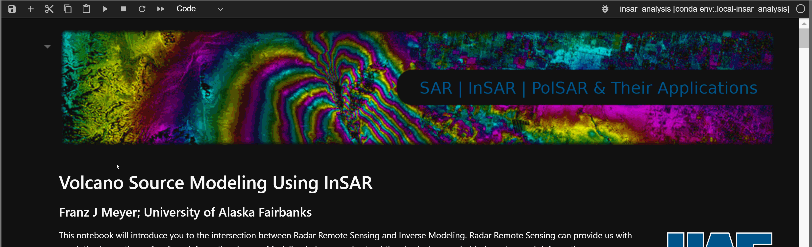
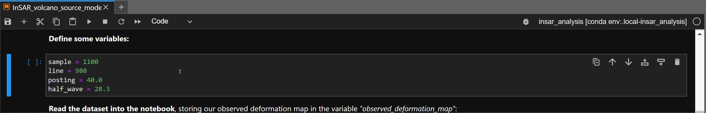
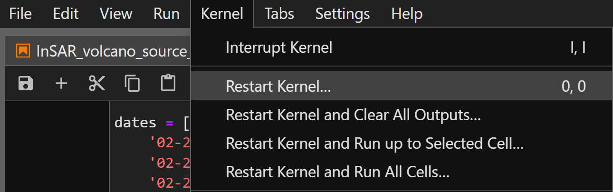

Getting Started
- A Light Introduction to Jupyter Notebook
- Detailed Instructions on Running Jupyter Notebook
- Summary and Demo
A Light Introduction to Jupyter Notebook
Jupyter Notebook is a web application that allows users to display:
- Interactive and runnable code cells, typically written in Python
- Markdown cells containing explanatory text, formulas, hyperlinks, tables, pseudocode, images, etc.
Jupyter Notebook provides an ideal format for teaching/learning coding concepts, prototyping algorithms, and collaborating on Python projects.
While Jupyter Notebook has four cell types, we use the following two for the OpenSciencelab:
Markdown Cells
Markdown cells contain documentation in Markdown, HTML, and/or LaTeX. They are often used to display text, images, hyperlinks, formulas, tables, pseudocode, plots, figures, etc.
- To enter edit mode in a markdown cell, double-click the cell.

A markdown cell in edit mode
If you wish to proceed through the notebook past the markdown cell or run a markdown cell's code to display its formatted contents, you can:
- Click the play button at the top of the notebook
- Use the shift + enter shortcut key.

A run markdown cell
NB: The cell will automatically move to the next cell if you are using the play button to run the cell.
Code Cells
Code cells contain editable and runnable Python code. You can run them in any order for any number of times.

A code cell
NB: While the ability to rerun the code cells in arbitrary order can be helpful, it can cause unexpected problems, such as: - Recycled variables may contain unexpected values if you run cells in non-sequential order. - Values from previous cells may trigger a different behavior when running the same cell.
Detailed Instructions on Running Jupyter Notebook
Now that users have a basic understandings of Jupyter notebook, users can use below manual as a refernce for detailed use.
Selecting Cells
Users may select cells individually or in a batch; users can then run the selected cells.
Edit Mode vs Non-Edit Mode
Before we discuss cell selection, it may be helpful to learn the difference between the edit mode and non-edit mode.
-
Edit Mode: If you select a cell using edit mode, you may edit the code and Markdown written on that cell. You can choose the cell in the edit mode by clicking inside the cell box.
-
Non-Edit Mode: If you select the cell outside of the code/Markdown box, you will be selecting the cell in a non-edit mode.
While the difference is subtle, it is crucial to know the different modes because some hotkeys are unavailable in the edit mode. For instance, the shift + j command will allow you to select multiple cells in the non-edit mode, but this does not work in the edit mode.
Select Individual Cell (Non-Edit Mode)
- Click on the left side of the cell.

A selected cell displays a blue horizontal line on the left edge. Markdown cell will have an additional shaded area that is directly next to the cell. For a visual example, please refer to the hiding cells section.
NB: It is crucial to avoid clicking the blue edge as well as the shaded area that is directly next to the cell. We will discuss this in a later section.
Select Multiple Cells (Non-Edit Mode)
- Select a cell in non-edit mode
- Select multiple cells with:
shift + jorshift + Down-Arrowto select additional cells belowshift + korshift + Up-Arrowto select additional cells above
- Perform batch operations on selected cells with play button or with
ctrl + enter.

Selected cells will have a blue background
Select Cell (Edit Mode)
- Click inside a cell block.

For live demonstration, please refer to the code cells section.
NB: The edit mode cell will no longer display green edges.
Select a Markdown Cell (Edit Mode)
- Double click inside a cell.

For live demonstration, please refer to the Markdown cells section.
NB: The edit mode cell will no longer display green edges.
Hiding a Cell
Sometimes, having too many cells may feel cumbersome. Below are the ways to hide the cells:
Hiding Individual Cell
You can hide an individual code cell by clicking the blue vertical line on the left of the code cell.

Hiding Multiple Cells
Alternatively, you may click the dark-shaded are on left of the Markdown cells to hide all proceeding cells.

Running Cells
Because you can run code cells in any order, each cell generates a number in the order they ran.

Run a Single Cell
With the Run Button
- Select any cell you wish to run.
- Do one of the following:
- Click
Runbutton Ctrl + Enterto run a cellShift + Enterto runs a cell and selects the cell belowAlt + Enterto runs a cell and inserts an empty cell below
- Click

Running selected cell multiple times with ctrl + enter
Run Multiple Cells
Instead of running just a single cell, you can run multiple cells at once in a following manner:
- Run every cell above/below selected cell.
- Run them in a groups of selected cell.
- Run the entire notebook
Running every cell above/below:
Select a cell, then:
- Select
Run All Above Selected Cellfrom the Run menu - or select
Run Selected Cell and All Belowfrom the Run menu

Running all cells above selected. Note that the selected cell is ignored.
Run a batch of selected cells
Select a group of cells, then: - Use a hotkey - or click the run button

Runs a group of cells in a batch using ctrl + enter
Run an Entire Notebook
If you wish to run the entire notebook from the get-go, you can do one of the following:
- Select
_Run_>_Run All Cells_ - Select
_Run_>_Restart Kernel and Run All Cells..._
The difference is that the former option preserves the values from the previous run while the latter lets you run from a new state—more on this in the next section.
Rerunning a Notebook
We recommend restarting the notebook kernel before rerunning it since any initialized variables and data structures from a previous run persist in memory along with their values, which can lead to unintended results.
For instance, consider the following case:
Assume you have a Python list with date-specific data, such as weather, stock prices, etc. If you were to run a cell that appends data from a specific date multiple times, it may yield unpredictable results due to the duplicate data.
e.g.
 In the above example, running the second cell once will append a new date at the end of the list.
In the above example, running the second cell once will append a new date at the end of the list.
 However, running the same cell will keep appending the same value.
However, running the same cell will keep appending the same value.
Rerunning previous cells can cause unexpected behavior. We recommend restarting the notebook when you are running from the beginning.
To restart the notebook, select any of the Restart options from the Kernel Menu.

Clearing Cell Output Before Closing
We recommend clearing every output from each code cell before closing or saving a notebook. Leaving the output in place can increase the file size of the notebook, which will use up more of your volume and cause slower notebook loading times (especially if you have a slow internet connection).